Techniques
1. The Dirty Pour
This technique is the most coommon of the bunch. How you do this is quite simple. Layer your paint of different colors on top of each other in a cup. Then proceed to pour the paint onto the canvas. After this, tilt and manipulate the canvas to spread the paint around to the edges of the canvas to make a smooth and uniform surface. Allow to dry and enjoy!
-
camera_altImages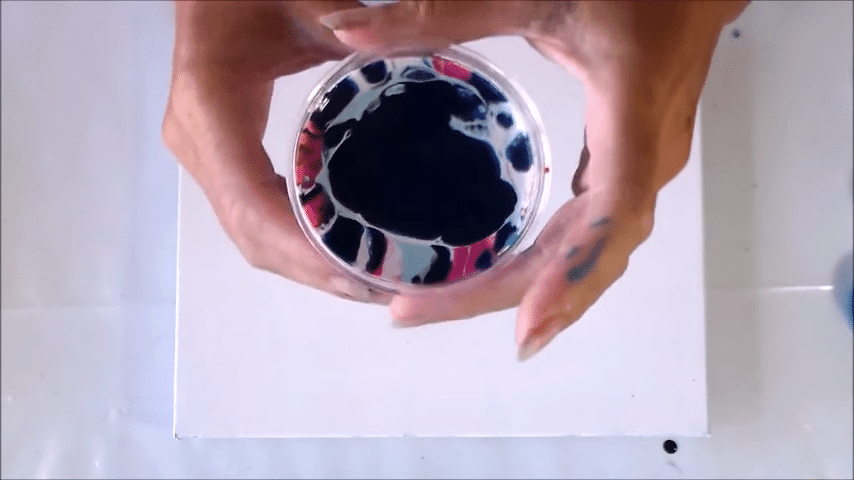 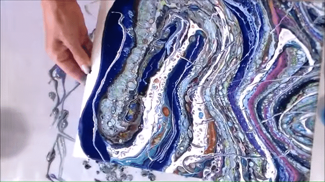 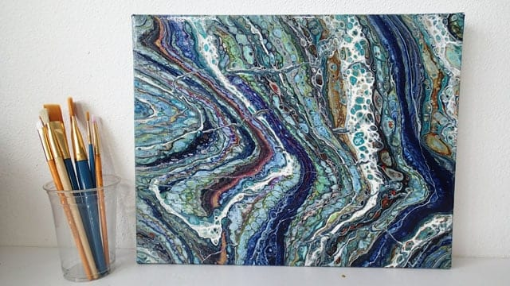
2. The Flip Cup
This is one of my favorite technique. The process begins the same way as the dirty pour. Layer your paint in a cup with different colors. Turn the canvas face down onto the top of the cup. Flip the cup and the canvas back over allowing the paint in the cup to all sink to the canvas face. Remove the cup and once again tilt the canvas around to spread the paint to the edges. Allow to dry and enjoy!
-
camera_altImages


3. The Tree-Ring Pour
I really enjoy this technique! Begin the same way as the dirty pour with layers of paint of different colors in a cup. For this one, you are simply going to slowly pour the paint in the center of the canvas in a small circular motion. Once the paint is gone, tilt the canvas to spread the paint to the edges. Allow to dry and enjoy!
-
camera_altImages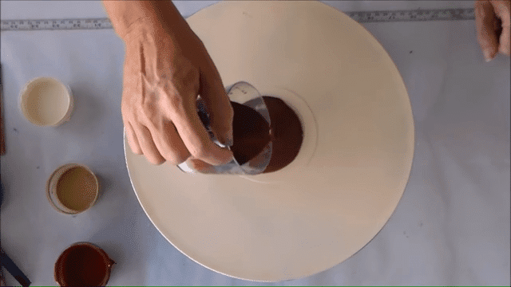 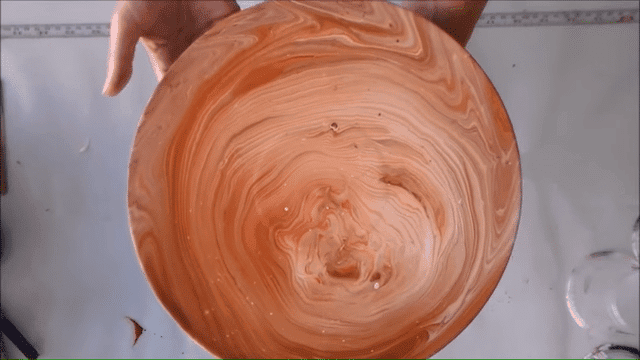 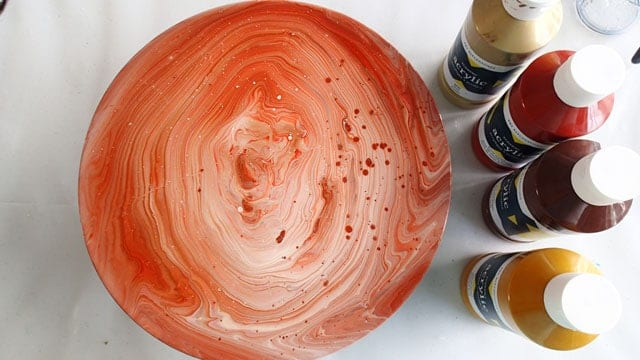
4. The Dutch Pour (Blow Pour)
My all-time favorite technique! It looks so cool once it is finished. For this technique, choose a background color for your canvas. Pour a good amount onto the canvas and spread it around; it doesn't have to be spread perfectly. Then, choose several other colors and proceed to pour each color in a line, a circle, any shape that you would like on the canvas. After that, use a blowdryer, a straw, or your lungs to blow the paint so that it spreads. Once you aare satisfied with how it looks, allow to dry and enjoy!
-
camera_altImages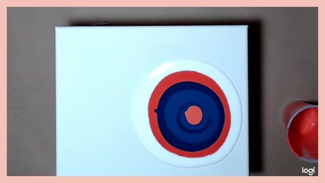 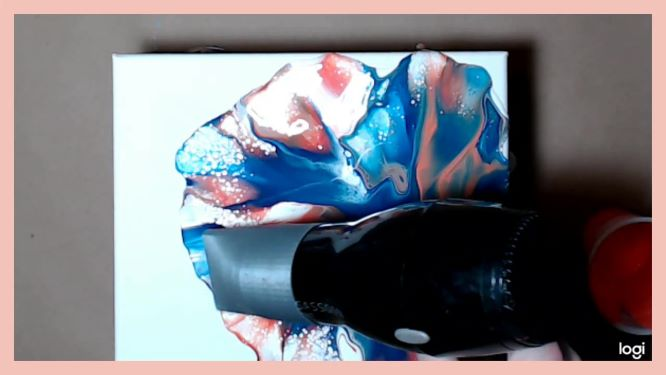

5. The Dip Pour
This technique looks quite interesting and I can't wait to try it out. The dip in this pour is done by taking another surface, pouring the paint on that, and then placing the canvas on top and removing it to reveal a very nice rippling/wave effect. You can use tin foil, another canvas, plastic wrap, etc. as the other surface. Pour your background color first onto your surface and then add your additional colors in various spots. Flip your canvas face down on the paint and then remove and flip it back over. Allow to dry and enjoy!
-
camera_altImages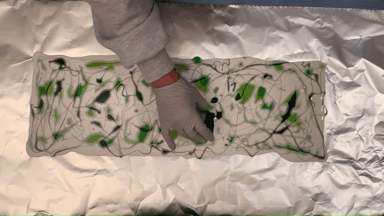 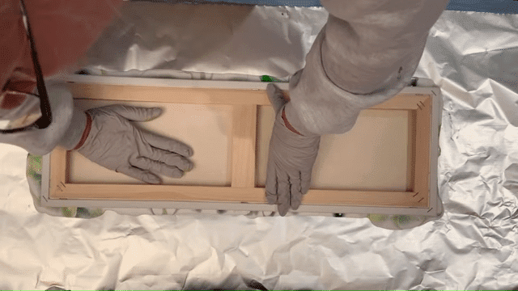 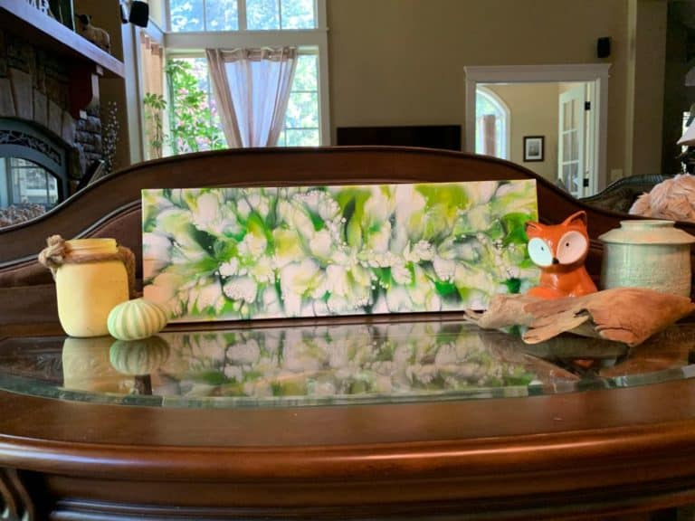